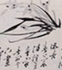
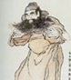

扬州瘦西湖
扬州八怪
扬州园林
扬州美女
扬州三把刀
烟花三月下扬州
网站首页
园林旅游
传统文化
古典文化
思想学派
维扬美食
线代扬州
烟花三月
雁过留声
更多
更多
更多
更多
更多
更多
卢氏盐商住宅与古巷风韵
扬州蜀岗瘦西湖景区
扬州 寄啸山庄
井口瓜州一水间 钟山只隔数重山之后丢失省略号
吴道台宅第与朱自清故居

扬州漆器工艺与线代美学
浅谈扬州剪纸文化
鉴真东渡
文峰塔
高雯寺
东关古巷与古建筑群的保护探讨
古运河风光带的美丽传说
扬州清泉的发展
广陵琴派五月雅集拾遗
木偶剧团的传统与创新风潮
扬剧与扬州弹词
扬州八怪纪念馆举办书画展

文人与维扬美食
扬州维扬美食-八怪美食
漫谈扬州人的吃蟹
扬州人的熟食摊风情
饮食文化传统淮扬亨饪文化的特省略号
2008年烟花三月旅行节即将举行
杨州古城保护图片展
烟花三月的扬州 美丽轻盈的柳絮
扬州小秦淮河夜景怡人
梨花院落融融月 柳絮池塘淡淡风
大运河保护与申遗工作会议召开
扬州中国雕版印刷博物馆日前成立
润扬长江大桥与宁启铁路构架扬州交通新格局
扬州创造良好的招商投资环境
扬州经济发展与市政建设成果喜人
网站首页
园林旅游
传统文化
古典文化
思想学派
维扬美食
线代扬州
烟花三月
雁过留声
网站首页
园林旅游
传统文化
古典文化
思想学派
维扬美食
线代扬州
烟花三月
雁过留声
网站首页
园林旅游
传统文化
古典文化
思想学派
维扬美食
线代扬州
烟花三月
雁过留声
古典
园林
运河
审美
更多>>